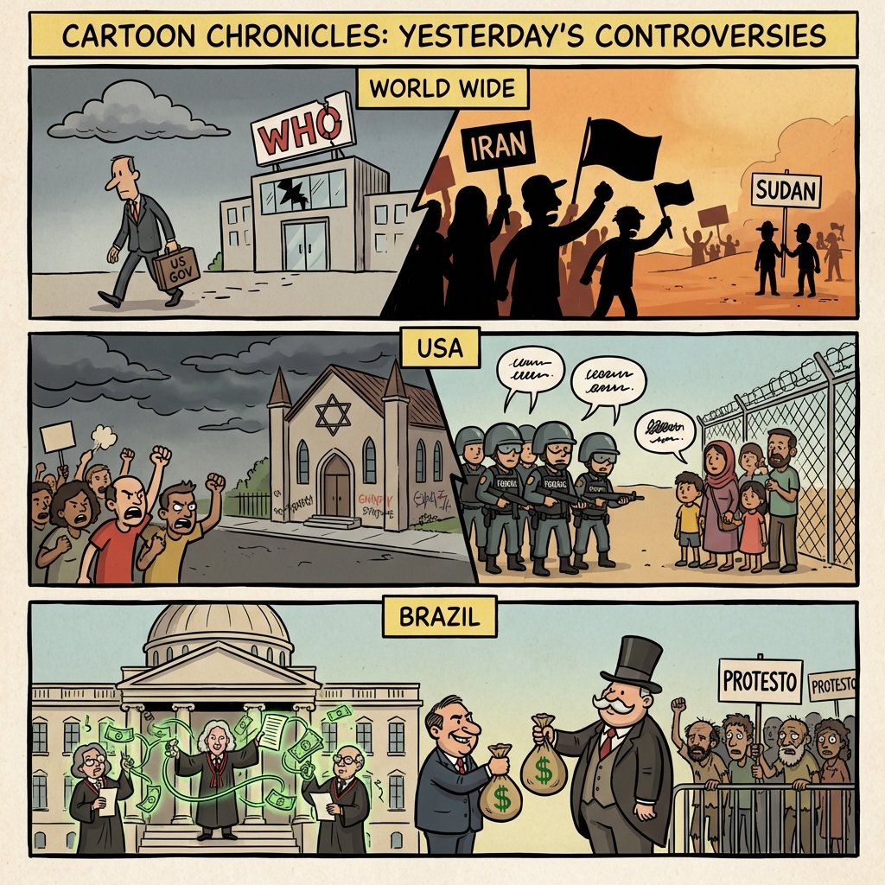

The Daily Globe: US Policy Shifts: Withdrawal from WHO and NATO Doubts, US Terminates WHO Membership in Rapid Policy Overhaul, and Crise no STF: Polêmicas de Dias Toffoli no Caso Banco Master
Published on 2026-01-24

World
- US Policy Shifts: Withdrawal from WHO and NATO Doubts
Heated debates over isolationist moves seen as damaging to global alliances, including termination of WHO membership.
- Iran Tensions: Shootings, Protests, and Foreign Interference Claims
Eyewitness reports of violence in Iran amid accusations against CIA/Mossad, alongside Gaza conflicts.
- Global Conflicts: Sudan Atrocities, Palestine, and India-China Border Issues
RSF crimes in Sudan, Netanyahu actions, and escalating border disputes drawing international outrage.
USA
- US Terminates WHO Membership in Rapid Policy Overhaul
Critics decry changes including child separations, memorial removals, and NATO skepticism.
- Antisemitic Vandalism and Murders in Washington DC
Synagogue attacks and killings of Zionists fuel debates on rising hate crimes.
- Controversies in Immigration Raids and Enforcement
Incidents of child custody issues, assaults on agents, and obstructions spark national debate.
Brazil
- Crise no STF: Polêmicas de Dias Toffoli no Caso Banco Master
Governador Tarcísio de Freitas chama de 'crise moral' interferências no Judiciário.
- Renúncias Fiscais de Romeu Zema em MG Beneficiam Bilionários
Isenções de IPVA para locadoras geram acusações de favoritismo e desigualdade.
- Polarização em Debates Políticos na TV sobre Segurança e Economia
Programas como CNN discutem rumos do país com figuras como Nikolas Ferreira.
Topic Index
- us-isolationism
- who-withdrawal
- nato-doubts
- iran-protests
- middle-east-conflicts
- sudan-atrocities
- antisemitism-rise
- immigration-raids